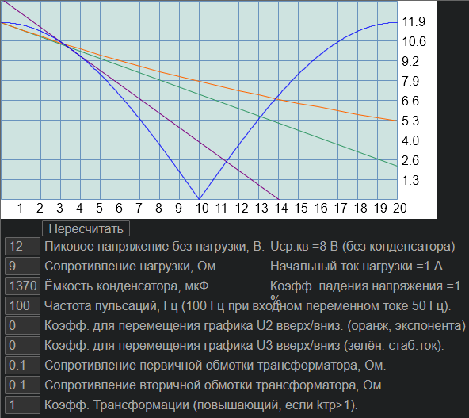

capacitor_in_PS
Назначение
Расчёт конденсатора.

Взаимосвязанные
capacitor_in_PS
capacitor_in_PS
Описание
Вычисление конденсатора в выпрямительном блоке питания.
Переписывание на PureBasic ранее написанного на AutoIt кода: https://azjio.ucoz.ru/publ/skripty_autoit3/skripty_dlja_windowsxp/primer_grafik_funkcii/5-1-0-5
На графике показан:
1. синусоида (спад от пика до 0 и подъём от 0 до максимального)
2. график разрядки прямым током (прямая зелёная)
3. график разрядки на активное сопротивление, уменьшающимся током по экспоненте (оранжевая спадающая по экспоненте)
4. касательная к синусоиде в точке пересечения графиков синусоиды и прямой ток (фиолетовая прямая).
Так как не получилось вычислить идеально, то есть экспоненциальный график не может быть ниже синусоиды и начинаться с точки пересечения, то добавлены поля чтобы принудительно приподнять графики экспонента и прямой ток вверх, задав величину подъёма.
Для расчёта введены некоторые универсальные параметры. В большинстве случаев необходимо изменить напряжения и ёмкость конденсатора и сопротивление нагрузки, далее если экспонента показывает провал напряжения, то увеличить ёмкость конденсатора добившись небольшого провала. В импульсном блоке питания несмотря на высокую стабилизацию провал напряжения всё равно не должен быть слишком низким, так как выходной генератор не сможет из 0 вытянуть какое либо напряжение. По крайней мере если питание на выходе 5В, то теоретически провал должен быть выше этого значения.
Сопротивление обмотки тр-ра могут влиять, так как если сопротивление обмотки и нагрузки одинаковы то напряжение падает в 2 раза, поэтому сопротивление обмотки тр-ра чаще минимум в 10 раз меньше сопротивления нагрузки, чтобы КПД был выше, при этом падение составляет 10%.
Коэффициент трансформации влияет на составляющую внутреннего сопротивления тр-ра. Если входное напряжение 220В, а выходное 12В, то коэффициент трансформации 220/12 В, при этом сопротивление вторичной обмотки будет меньше примерно во столько же раз, то есть несмотря на увеличение сопротивление первичной обмотки также снижается и её влияние на внутреннее сопротивление тр-ра как источника питания.
Среднеквадратичное напряжение является эквивалентов как если бы ток был прямой и выдавал ту же мощность, при этом если используется конденсатор то увеличивается и среднеквадратичное напряжение.